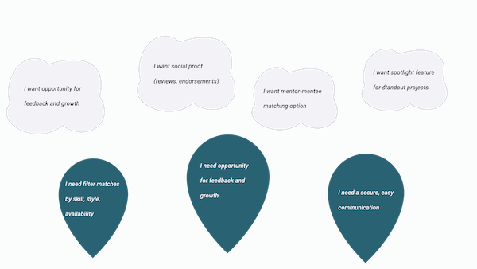
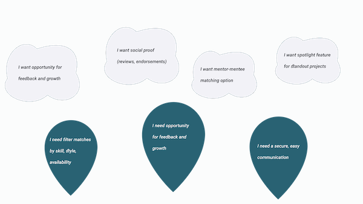
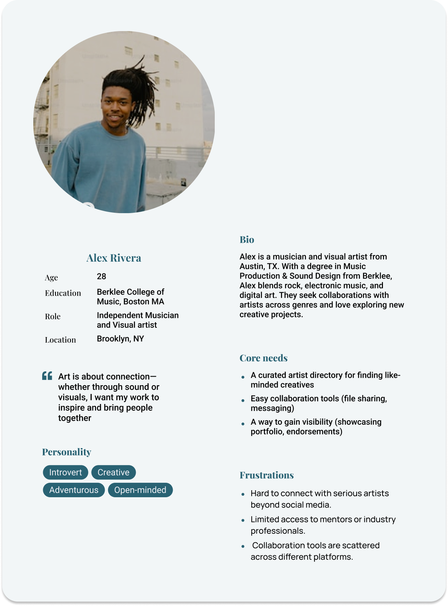
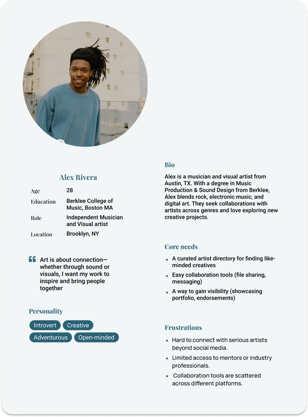
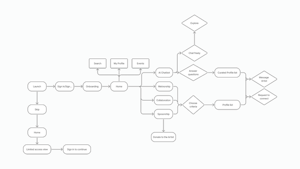
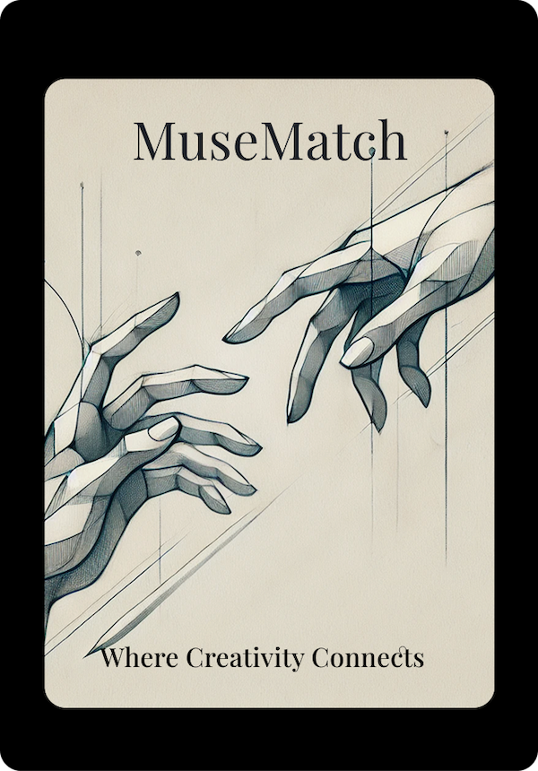
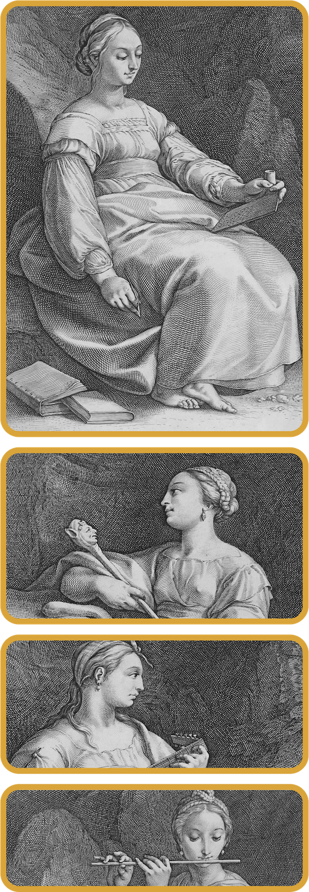
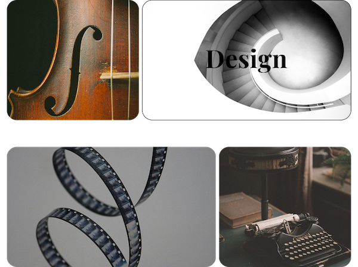
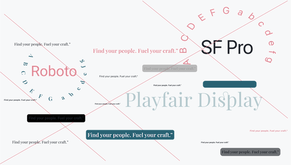
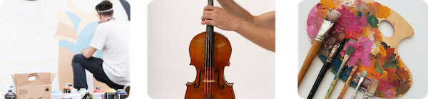

MuseMatch
Project Overview
MuseMatch is a native app that offers space where connection feels easy, and creativity gathers momentum through real conversation. Artists don’t just need exposure — they need meaningful relationships that support their creativity. MuseMatch makes those connections possible, because the next great project often starts with the right introduction.
My Role
I led the end-to-end product design for MuseMatch — from
- concept to user research
- flow mapping to wireframes
- visual design
- interactive prototyping
I focused on creating a user-centered experience that blends artistic personality with intuitive functionality.
Hypothesis
By creating a platform with a clear purpose and guiding users through a personalized onboarding flow, creative individuals will be more likely to form meaningful, aligned connections — leading to greater engagement, creative momentum, and a stronger sense of community.

Problem
In the creative world, talent alone isn’t enough — finding the right people to collaborate with, learn from, or gain support from is often what determines whether a project thrives or never gets off the ground.
- Most platforms showcase work, but don’t build relationships.
- Creatives need intentional, aligned, supportive connections.
- Without that, many feel isolated, stuck, or unsupported.
Solution
MuseMatch is a user-centric platform built to support the full spectrum of creative connection. The platform blends AI-driven matchmaking, dynamic profiles, and structured mentorship tools to help creatives:
- Collaborate with aligned artists based on skills, goals, and creative direction.
- Showcase their work in a way that fosters collaboration.
- Secure funding by connecting with sponsors, patrons, or brands that support the arts.
- Showcase their work through personalized profiles.
User
MuseMatch is for creatives 16 and up — from newcomers to seasoned pros. It’s a space to find collaborators, mentors, or supporters, and for anyone who believes great things happen when creative minds connect.

User Personas


User Flow
- Users start by selecting a creative goal: collaboration, mentorship, or sponsorship.
- An AI-led, conversational flow gathers key info: field, intent, and preferences.
- Based on that, MuseMatch suggests curated matches to connect or explore.
- Prefer browsing? Users can skip the AI and explore on their own.
- The experience is intuitive, flexible, and user-centered.
User Flow Diagram

Styleguide
The Visual Mark
anchors the platform’s identity around creativity and connection. It serves as a symbol of the platform’s mission to help artists grow, collaborate, and find new opportunities through seamless, user-centered experiences.

Main Navigation Card Imagery
Stunning, symbolic visuals are layered behind each navigation card—adding mood, texture, and a sense of atmosphere without competing with the content. Each image is carefully chosen to evoke one of the artistic “muses,” subtly guiding users as they explore different creative paths. The result is a balance of clarity and emotional tone that elevates the overall experience.


Color

Typography

Design Evolution
Throughout the design process I conducted multiple rounds of informal usability testing with 7 users from various backgrounds.
Focus areas
- User flow clarity
- Visual consistency
- Feature comprehension
- Typography
- Usability across iOS and Android mockups
Feedback gathered through
- Walkthroughs
- Prototype interactions
- Follow-up conversations for qualitative insights
What Worked
- Clear and thematic visual design
- Smooth onboarding and single sign-in options
- Persistent header/footer made navigation easier
- The app concept felt meaningful to creatives
- Positive emotional tone in onboarding/chat
What needed to Improve?
- All AI chat paths lead to the same generic screen
- Inconsistent navigation: notification and back buttons behave unpredictably
- Inconsistent navigation: notification and back buttons behave unpredictably
- Some buttons unresponsive (e.g., collaboration, music, design)
- Some buttons unresponsive (e.g., collaboration, music, design)
- Scrolling doesn't work on key screens (e.g., home, category views)
Takeaways
- Designing MuseMatch highlighted the importance of balancing creative expression with clear, user-centric structure.
- Testing and iteration showed how critical it is to create intuitive and emotionally relevant flows.
- Feedback shaped layout refinements, and deeper UX decisions around purpose, tone, and accessibility.
- Time constraints created challenges in coordinating testing, synthesizing insights, and iterating quickly without sacrificing quality.
- Ultimately, this project reinforced that great design means making intentional choices that put the user first.
- These constraints pushed me to prioritize user needs and focus on delivering clarity and emotional resonance through the core experience.
Next Steps
- Refine the prototype focusing on smoother transitions, realistic AI chat simulation, and polished user feedback states to improve the overall experience and testability.
- Plan additional testing sessions with real users to gather feedback on tone, flow, and clarity. Based on those insights iterate and improve onboarding, navigation, and feature prioritization.
- Explore the next tier of features such as: messaging center, project collaboration boards, sponsorship matching filters, AI personalization settings

Prototype
Explore the interactive prototype to experience the MuseMatch flow firsthand.
View Prototype